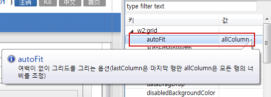
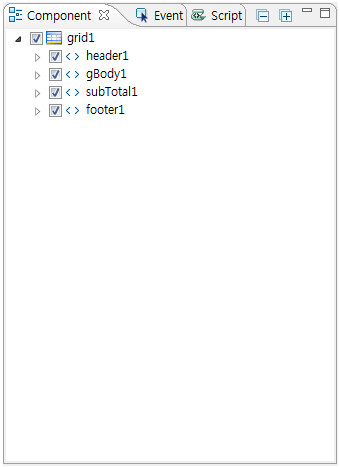

30.Grid
Grid 컴포넌트의 기능은 GridView 컴포넌트와 거의 동일합니다. 그리드의 생성과 데이터 형식과 표현의 방식만 상이할뿐 같은 기능을 수행하는 컴포넌트 입니다. GridView 컴포넌트의 경우 data API가 없기때문에 dataList 와 같은 객체를 참조해야 하지만, Grid의 경우 data API 와 view API를 포함하고 있습니다. (웹스퀘어5.0에서는 기본적으로 GridView를 사용합니다.)
30.1Property
그리드의 복잡한 구조를 대부분 속성설정을 통하여 정의합니다. 아래에 자주 사용하는 속성을 설명하겠습니다.
30.1.1autofit 설정

- autofilt="allColumn"
화면 조회시 그리드 컬럼의 width를 자동으로 늘리거나 줄여 그리드에 지정된 width를 채워서 그리는 옵션이다.
autofilt="allColumn"은 화면에 보이는 모든 컬럼이 균등하게 늘어나 그리드 width를 채운다.
- autofit="lastColumn"
autofilt="lastColumn"은 화면에 보이는 마지 컬럼만 늘어나 그리드 width를 채운다.
30.1.2autoFitMinWidth 설정
autoFitMinWidth
autofit를 allColumn으로 설정 시 브라우저를 원하는대로 늘리거나 줄여도 그리드는 100%로 리사이징 됩니다, 하지만 최소넓이 값을 갖고 싶으면 autoFitMinWidth 속성을 제어하시면 됩니다.
예) 해당값을 1024px로 지정하면 그리드풀사이징에서 해당 사이즈로 줄었을때 가로 스크룰이 발생되며 더 이상 리사이징을 막습니다.
[그림 30-1]<그림 1. autoFitMinWidth 속성 적용 화면 >
30.1.3inputType 설정

[그림 30-2]7
그리드셀을 선택한 후 해당셀의 inputType을 설정할수 있습니다. 원하는 타입을 선택하셔서 그리시면 됩니다. text : input태그 link : a태그 checkbox : checkbox태그 button : button태그 image : 이미지태그 radio : radio태그 select : select태그 calendar : 달력폼 expression : 간단한 합계/평균등을 계산하여 표시하는 기능 textarea : textarea 태그 drilldown : Level 입력되어 있는 컬럼명을 참조하여 뎁스를 표시 (웹스퀘어템플릿사이트참조:http://template.websquare.co.kr/) textImage : 입력박스랑이미지결합된 컴포넌트 checkcombobox : select태그에서 멀티선택 가능한 태그 autoComplete : input방식의 자동완성 기능 secret : secret 태그
30.1.4visibleRowNum 적용

[그림 30-3]8
그리드전체를 선택한 후 visibleRowNum 수를 설정하면 그 수 만큼 높이 무시하고 행추가 됩니다. 숫자를 초과한 데이터는 스크룰형태로 나타납니다.
30.1.5셀의 데이터가 길어질 때는 tooltipDisplay
[그림 30-4]9
그리드의 셀 크기가 긴 데이터일 경우 해당 셀 마우스 오버 시 내용이 보입니다.
30.1.6grid.insertRow();

그리드 API를 이용하여 UI화면에서 행추가된 내용을 보여줄때 용이하게 쓰입니다.
예:) insertRow()를 6줄 추가하면 UI화면에 그리드 6줄로 표시됩니다.
30.2브라우저 캡쳐화면
[그림 30-5]06
Grid API
insertRow( rowIndex )
rowIndex에 해당하는 행에 새로운 행을 삽입합니다.
grid1.insertRow( ); //반복한 갯수만큼 생성됨
예제
<script type="text/javascript"><![CDATA[
grid1.insertRow( );
grid1.insertRow( );
grid1.insertRow( );
grid1.insertRow( );
grid1.insertRow( );
]]></script>
30.3class 적용과 스타일 변경

/* reset */ .xin .gridHeaderTableDefault{ background:#5298d3;border:1px solid #266dab !important; } .xin .w2grid th .gridHeaderTDDefault{ background:#5298d3;color:white; border: 1px solid #005aa5; } .xin .gridBodyDefault{ height:30px; color:#333; text-align:center; cursor:default; border:1px solid #b3b3b3; }
30.4CSS Overriding

[그림 30-6]07
30.5주의사항 및 Tip
웹스퀘어 5.0버전에서 grid 컴포넌트로 그려진 파일을 수정 할 경우, 5.0버전에서 제공하는 속성이 모두 지원이 되지 않습니다. 이 점 참고하시기 바랍니다.
grid 컴포넌트 웹스퀘어 2.0에서만 제공
그리드에서 제공하는 속성 확인 후 수정
웹스퀘어 2.0버전에서 수정 또는 작업
그리드는 크게 행과 열로 구성되는 것이 일반적입니다.
30.6Grid 설명
WebSquare의 그리드는 행과 열의 구성에 앞서 header, body, subTotal, footer 요소를 가집니다. 하나의 그리드에는 header, body, footer는 하나씩 존재할 수 있으며, subTotal은 여러개가 있을 수 있습니다. 4가지 각 요소는 각각의 행을 가지며, 하나 이상의 행으로 구성할 수 있습니다. 열에 대한 제어(추가, 삭제)는 4가지 요소에 공통적인 영향을 가집니다.
Header : 그리드의 상단에 위치하고 있으며, 주로 각 열에 대한 제목을 표현하는데 사용됩니다. header의 활용은 제목 표현에만 제한되어 있지 않고, input, checkbox 등 여러 가지 타입으로 표현할 수 있고, 특정 기능을 부여할 수 있습니다.
Body : header 바로 아래에 위치하고, 실제 데이터와 연관됩니다. 여려 개의 행과 열로 구성되며, body의 각 셀은 데이터를 표현합니다. 열에 대하여 input, checkbox, select, calendar 등 여러 가지 타입으로 표현 할 수 있고, 읽고 쓰는 것이 가능합니다.
SubTotal : body의 행 아래에 위치하고 있고 특정 열의 값을 기준으로 하여 그룹별 합, 평균 등의 소계를 나타내는데 사용됩니다.
Total : 그리드의 하단에 위치하고 있으며 특정 열전체의 합, 평균 등의 총계를 나타내는데 사용됩니다.
[그림 30-7]< 그림1. 그리드의 header, body, subTotal, total 포함된 그리드 >

[그림 30-8]< 그림2. Component 그리드 생성 >
컬럼추가 : 열추가는 행 추가의 마찬가지로 body요소에 셀을 선택하고 "우클릭"하여 "왼쪽에 열 삽입", "오른쪽에 열 삽입", 행추가, 행삭제, 셀병합 등 을 선탁하여 열을 추가합니다.
웹스퀘어 상단의 메뉴 아이콘(행추가,행삭제, 등)을 통하여도 가능합니다.
[그림 30-9]03
셀 너비, 높이 설정 : 셀의 속성 기본값 width="70px", height="20px" 이며, 행 높이, 열 너비는 inline-style 또는 Property 또는
디자인 창에서 해당 컬럼에 더블클릭하여 "값 수정" 창에서 설정 또는 수정이 가능합니다.
[그림 30-10]Grid (2.0)와 Gridview (5.0) Property 비교
Grid(2.0) 에서만 사용하는 Property
Property | Description |
|---|---|
baseNode | 그리드 데이터 xml의 반복 node이전까지의 xpath |
footerCaptio | grid footer의 caption |
footerSummary | grid footer의 요약 |
repeatNode | 그리드 데이터 xml의 반복 node xpath |
valueNode | 실제 데이터를 갖고 있는 attribute 이름,빈 값의 경우 텍스트 노드에 셀 데이터를 갖음 |
gridview(5.0)에 추가된 Property
Property | Description |
|---|---|
dataList | gridView의 data에 해당하는 DataCollection의 DataList id. |
ignoreCellClick | drilldown사용할때 toggle 이미지 클릭시 gridView에 oncellclick 이벤트를 발생시키지않음 |
ignoreNonEditableCell | cell이 편집 불가능할 경우 tab이나 enter로 인한 이동시 무시 여부 |
ignoreToggleOnDisabled | drilldown사용할때 toggle 이미지 클릭시 해당 셀에 disabled가 적용되어 있을 경우 toggle시키지 않음. |
moveKeyEditMode | 방향키로 원하는 방향에 위치한 셀의 editMode 상태에 바로 진입한다. |
scrollByColumnAdaptive | [default:false, true] adaptive상태일 때 가로 스크롤이 컬럼 단위로 이동할지의 여부. |
30.7datacollection설정
DataCollection에서 사전에 그리드뷰의 데이터를 설정합니다..
30.7.1작업입력 설정방법

[그림 30-11]6
DataCollection창에서 Add옆 화살표 아이콘을 눌러서 DataList 추가하기를 클릭합니다.
추가하기를 누르면 Data Info창이 활성화 되는데 해당 영역은 개발자가 셋팅하는 부분이라 넘어가겠습니다.
Column Info 창에서 그리드 행추가를 누르면 그리드행 한줄 추가됩니다.
그려진 1번행을 클릭하고 그리드 행을 제거할수 있습니다.

마지막 아이콘은 만들어진 행 위에 새로 행추가 되는 버튼입니다.

Column Info창은 그리드컴포넌트의 head영역이라고 생각하시면 되겠습니다. name 부분에 입력한 내용은 preview 시 head부분에 반영됩니다.

DataCollection의 마지막인 Data영역입니다. 이부분은 그리드에서 실제로 보여지는 body내역입니다.

상단 행추가를 누르고 아래화면처럼 데이터를 입력합니다.
브라우저에서 편집한 데이터를 확인하려면 반드시 use data 체크박스를 활성화해야합니다.
30.7.2Excel복사 설정방법
DataCollection의 Data는 직접 만들어진 Excel을 복사해서 붙여넣기 가능합니다. 반대로 입력한 데이터를 Excel에 붙여넣기도 가능합니다.
예제로 Excel에 있는 데이터를 복사해 보겠습니다.

Data창에서 행 한줄 생성한 다음 첫번째 컬럼을 선택하고 붙여넣기를 합니다.
Data창에서 행 한줄 생성한 다음 첫번째 컬럼을 선택하고 붙여넣기를 합니다.

웹스퀘어의 그리드 컴포넌트는 Excel 기반의 데이터호환이 가능해서 편집이 쉬워집니다.
30.8Grid생성
Palet창에서 Grid를 선택해서 디자인뷰에 생성합니다


Click & Click 모드로 생성하면 엔진에서 자동으로 css 가 부여되는데 이부분을 변경하겠습니다.

css에서 width및height값을 변경했습니다.
만든 데이터를 component창에서 dataList1을 선택합니다.
해당 dataList1를 디자인뷰의 Grid영역에 드래그합니다.

dataList1에 생성 대화창이 뜨는데 확인 누르시면 됩니다.
아래 화면처럼 디자인 뷰에서 그리드뷰가 생성된것을 확인 할 수 있습니다.
마지막으로 Property 창에서 autoFit 속성을 allColumn으로 선택합니다.
브라우저에서 띄워보면 Grid 생성된화면을 확인할수 있습니다.